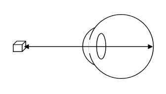

+ Trục thị giác: là đường thẳng được vẻ từ một vật ở xa đến hoàng điểm. Ở mắt bình thường, trục thị giác xuyên qua đỉnh giác mạc, trung tâm đồng tử, và phần dày nhất trước-sau của thể thủy tinh

Hình: Trục thị giác

Hình: Trục thị giác và góc nhìn